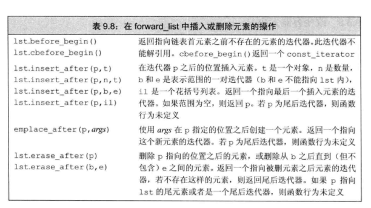
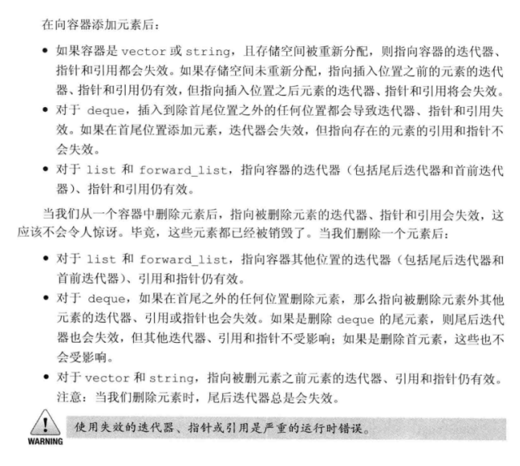
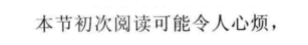
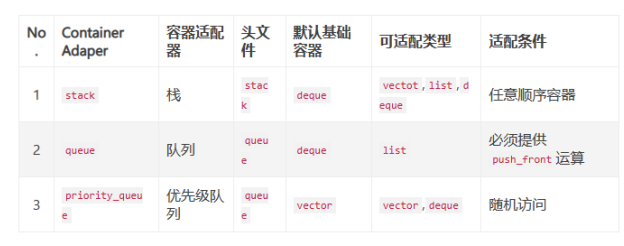
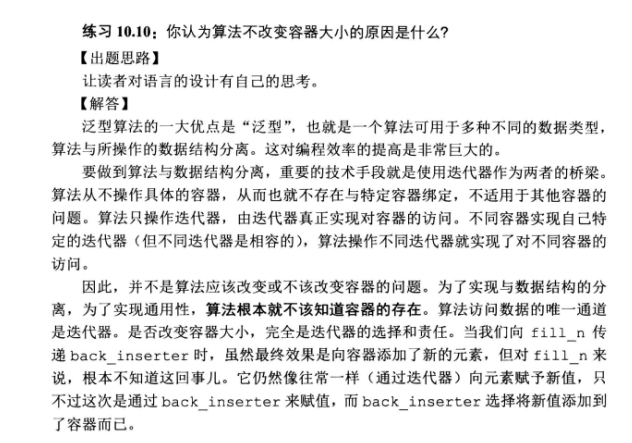
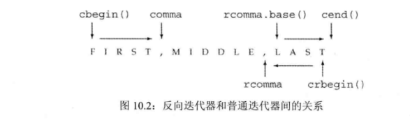

《C++ Primer》 8-12章笔记
第八章
IO类
IO对象无拷贝或赋值，进行IO操作的函数通常以引用方式传递和返回流
读写一个IO对象会改变其状态，因此传递和返回的引用不能是const的
流的状态（iostate类型的constexpr值）：
badbit置位，系统级错误，不可恢复
failbit置位，通常可修正，流可以继续使用
eofbit，文件结束位置，文件结束时failbit也会置位
goodbit，值为0表示流未发生错误，前三个任一个被置位则错误
1 | auto oldState = cin.rdstate();//rdstate返回流当前状态 |
管理输出缓冲
每个输出流都管理一个缓冲区，刷新缓冲的原因有：
- 程序正常结束，作为main函数return操作的一部分，缓冲区刷新
- 缓冲区满
- endl操纵符显式刷新（另，flush刷新缓冲区但不输出额外字符，ends插入一个空字符然后刷新缓冲区）
- 每个输出操作后用操作符unitbuf设置流的内部状态，清空缓冲区。cerr默认是设置unitbuf的
- 一个输出流被关联到另一个流。当读写被关联的流时，关联到的流的缓冲区会被刷新
1 | cout<<unitbuf; |
如果程序崩溃，输出缓冲区不会被刷新
关联输入和输出流
交互式系统，所有输出都会在读操作之前被打印
每个流最多同时关联到一个流，但多个流可以同时关联到一个ostream
文件输入输出
1 | ifstream in(inFile);//C++11中inFile可以是库类型string对象，也可以是C风格字符数组 |
一旦一个文件流被打开，就保持与对应文件的关联；为了关联另外一个文件，首先必须关闭close()已经关联的文件
fstream对象被销毁时，close会自动被调用
文件模式
app是每次写操作前定位到文件末尾；ate是打开文件后立刻定位到文件末尾
trunc是截断文件（打开文件时清空已打开的文件流）
out模式默认是trunc模式
string流
sstream.str()返回string流所保存的string的拷贝
sstream.str(s)将s拷贝到string流中，返回void
第九章
顺序容器概述
| 容器 | 访问方式 | 操作特点 |
|---|---|---|
| vector | 快速随机访问（因为内存中连续存储） | 尾部插入删除元素快 |
| deque | 快速随机访问 | 头尾插入删除元素快 |
| list | 只能双向顺序访问（额外内存开销较大） | 在任何位置插入删除都很快 |
| forward_list | 只能单向顺序访问（额外内存开销较大） | 在任何位置插入删除都很快 |
| array | 快速随机访问 | 不能添加删除元素 |
| string | 快速随机访问（因为内存中连续存储） | 尾部插入删除元素快 |
forward_list和array是C++新标准增加的类型
array与内置数组比更安全更易用，其大小固定。
forward_list没有size操作，因为保存或计算其大小会多出额外开销
选择容器的一些基本原则：
- 没有很好的理由就用vector
- 程序有很多小元素且空间额外开销很重要，ban掉list和forward_list
- 要在容器中间插入删除，用list或forward_list
- 仅在头尾操作，deque
- 只需要在读取输入时在中间插入，读取完后随机访问：考虑在输入阶段用list，完成后拷贝到vector中
容器库概览
迭代器
forward_list不支持迭代器的--运算符
开头带r的反向迭代器
容器定义和初始化
只有顺序容器（不包括array）的构造函数才能接受大小参数
1 | C seq(n); |
创建一个容器为另一个容器的拷贝时，两个容器的类型和元素类型必须匹配。但通过传递迭代器参数拷贝一个范围时，就不要求容器类型和元素类型是相同的了，只要能将拷贝的元素转换到所需类型即可
array具有固定大小
1 | array<int,42> a; |
一个默认构造的array是非空的，包含与其大小一样多个元素，且元素均被默认初始化。
内置数组不能拷贝或为另一数组赋值，但array没有此限制
赋值和swap
array不允许用花括号列表进行赋值（可以用于初始化），也不支持assign
赋值运算符要求左右运算对象具有相同的类型
顺序容器还定义一个名为assign的成员，允许从一个不同但相容的类型赋值，或者从容器的一个子序列赋值
除array外，swap操作中元素本身并未交换，无任何拷贝删除插入操作，只是交换两个容器的内部数据结构，保证常数时间内完成
对string调用swap会导致迭代器、引用、指针失效，其他容器不会
array完成swap操作后，原有的迭代器等绑定的元素不变，变得是元素值
其他顺序容器swap后，迭代器等指向仍然指向之前的元素，但是元素本身所属的容器已经发生了变化
顺序容器操作
添加元素
1 | c.insert(p,t);c.emplace(p,args)//在迭代器p指向的元素之前创建值为t或由args创建的元素，返回指向新添加的元素的迭代器 |
*forward_list有自己专有版本的insert和emplace
*forward_list不支持push_back和emplace_back
*vector和string不支持push_front和emplace_front
向vector或string或deque插入元素会使所有指向容器的迭代器引用指针都会失效
emplace构造而非拷贝元素（CPP11）,传入emplace的参数必须与元素类型的构造函数参数匹配
访问元素
1 | c.at(n)//返回下标为n的元素的引用 |
front back at返回的都是引用
1 | c.front() = 42; |
forward_list不使用back
at只适用于string array deque vector
删除元素
1 | c.pop_back(); |
*forward_list有自己专有版本的erase
*forward_list不支持pop_back
*vector和string不支持pop_front
删除deque中除首尾位置之外的元素会使所有迭代器引用指针失效。指向vector或string删除点之后位置的迭代器引用指针都会失效
erase会保留原有的空间，但是容器的size参数会变化
forward_list中的特殊操作
因为单向链表无法访问一个元素的前驱，所以在单向链表中添加或删除元素是操作给定元素之后的元素完成的

改变容器大小
1 | c.resize(size); |
resize缩小容器时，指向被删除元素的迭代器引用和指针都会失效；对vector/string/deque进行resize可能导致迭代器、指针、引用失效
容器操作可能导致迭代器失效

vector对象是如何增长的
vector元素连续存储
导致，添加元素时：若没有空间容纳新元素，容器必须分配新的内存空间将已有元素移动过去再添加新元素，释放旧空间
标准库实现中：当不得不获取新的内存空间时，vector和string的实现通常会分配比新空间需求更大的内存空间，容器预留这些空间作为备用。
1 | //容器大小管理操作 |
需求大小小于当前容量时，reserve不会回收内存空间，而是什么也不做
resize不会改变容器的容量
shrink_to_fit是CPP11的新操作，但具体实现可以忽略其请求，也即调用该函数也不保证一定会退回内存空间
额外的string操作

确实。
容器适配器
适配器是标准库中的通用概念。容器、迭代器、函数都有适配器
stack queue priority_queue
没有提供与元素保存相关的数据结构实现，通过调用底层的基础容器来实现其功能

C++中的容器适配器是干什么的呢？我们已有容器（比如vector、list、deque），他们支持的的操作很多，比如插入，删除，迭代器访问等等。而我们希望这个容器表现出来的是栈的样子：先进后出，入栈出栈等等，此时，我们没有必要重新动手写一个新的数据结构，而是把原来的容器重新封装一下，改变它的接口，就能把它当做栈使用了。 原文链接：https://blog.csdn.net/qq_21989927/article/details/109392756
第十章
概述
大多数定义在头文件algorithm中，头文件numeric中定义了一组数值泛型算法
一般情况下，泛型算法不直接操作容器，而是遍历两个迭代器指定的一个元素范围来进行操作
迭代器令算法不依赖于容器，但算法依赖于元素类型的操作（比如find的==完成给定值和每个元素的比较）
算法永远不会执行容器的操作，只会运行于迭代器之上，执行迭代器的操作
初识泛型算法
只读算法
accumulate
1 | int sum = accumulate(vec.begin(),vec.end(),0); |
accumulate定义在头文件numeric中，第三个参数是和的初值。第三个参数的类型决定了函数中使用哪个加法运算符以及返回值的类型
只读算法最好使用cbegin和cend，但是如果要使用返回的迭代器改变元素的值，则需要使用非常量版本
equal
1 | equal(roster1.cbegin(),roster1.cend(),roster2.cbegin()); |
确定两个序列是否保存相同的值，roster1和roster2的容器类型和元素类型都不必相同，只要能用==比较即可
equal假设第二个序列至少与第一个序列一样长
写容器元素的算法
注意序列原大小至少不小于要求算法写入的元素数目
fill
1 | fill(vec.begin(),vec.end(),0); |
back_inserter
定义在头文件iterator中
一种保证算法有足够元素空间容纳输出数据的方法是使用插入迭代器
通过back_inserter赋值时，与赋值号右侧相等的元素被添加到容器中
1 | vector<int> vec;//empty |
拷贝算法
copy
1 | int a1[] = {0,1,2,3,4,5,6,7,8,9}; |
前两个参数表示一个输入范围，第三个参数表示目的序列起始位置
目的序列至少要包含与输入序列同样多的元素
copy返回目的位置递增后的迭代器的值，上例中返回a2尾元素之后的位置
replace
1 | replace(il.begin(),il.end(),0,42); |
Attention:
1 | vector<int>vec; |
这段程序是错误的，因为泛型算法对容器的要求是有足够的元素，而非足够的空间，即便使用了reserve，vec仍然为空，而fill_n在不适用back_inserter的情况下没有插入新元素的能力
重排容器的算法
sort排序
unique重排输入序列，将相邻重复项消除，并返回一个指向不重复值范围末尾的迭代器（不是真的删除元素，而是覆盖相邻的重复元素）
1 | vector<string> vec{ "adsad","vsf","dsad","dsad","quie" }; |

定制操作
向算法传递函数
谓词是一个可调用的表达式，其返回结果是一个能用作条件的值。标准库算法使用的谓词分为一元谓词（接受一个参数）和二元谓词。接受谓词参数的算法对输入序列中的元素调用谓词。
lambda表达式（CPP11）
一个lambda表达式表示一个可调用的代码单元，可以将其理解为一个未命名的内联函数，其形式如下
1 | [capture list](parameters list)->return type {function body} |
捕获列表和函数体必须被包含，参数列表和返回类型可以忽略
lambda的调用方式也使用调用运算符
lambda不能有默认参数
lambda表达式只能使用明确指明的变量，将需要使用到局部变量包含在其捕获列表中使用
1 | for_each(begin,end,function) |
对迭代器[begin,end)范围内的元素执行function操作
lambda捕获和返回
定义lambda时，编译器生成一个与lambda对应的新的未命名类类型。当向一个函数传递一个lambda时，同时定义了一个新类型和该类型的一个对象，向函数传递的参数就是该对象，lambda所捕获的变量都有对应的类数据成员，在lambda对象创建时被初始化。
值捕获、引用捕获
值捕获的前提是变量可拷贝，被捕获变量的值在lambda创建时被拷贝
引用捕获的变量与其他任何类型的引用的行为相似。要保证被引用的对象在lambda执行时是存在的
尽量保持lambda的变量捕获简单化
隐式捕获
让编译器根据lambda体中的代码自动推断使用哪些变量
捕获列表中&告诉编译器采用引用捕获方式；=表示采用值捕获方式
混合使用隐式捕获和显式捕获
1 | for_each(words.begin(),words.end(),[&,c](const string& s){}); |
需要为一个lambda定义返回类型时，必须使用尾置返回类型
参数绑定
可以将bind看作一个通用的函数适配器，接受一个可调用对象，生成新的可调用对象适应原对象的参数列表
1 | auto newCallable = bind(callable,args_list); |
args_list为参数列表，其中可能包含_1,_2等占位符
1 | bool check_size(const string &s,string::size_type sz){ |
_1,_2等占位符定义在名为placeholders的命名空间中
auto check6 = bind(check_size,_1,6);指用check6调用时的第一个参数作为check_size的第一个参数，6作为check_size的第二个参数
1 | auto g = bind(f,a,b,_2,c,_1); |
传给g的参数按照位置绑定至占位符，实际上调用的是f(a,b,Y,c,X);
绑定引用参数使用ref()或者cref()，二者返回一个对象包含给定参数的引用，该对象是可拷贝的。
因为bind函数中不是占位符的参数会通过拷贝传递给bind返回的可调用对象中，而有时被绑定的参数类型无法拷贝，或者希望以引用方式传递
再探迭代器
插入迭代器
是一种迭代器适配器，接受一个容器，生成一个迭代器，能实现向给定容器添加元素
back_inserter front_inserter inserter(只有在支持front或back相关操作时才能使用)
inserter(c,iter)会将元素插入到c中iter指向的元素之前的位置
1 | inserter(c,iter); |
iostream迭代器
istream_iterator ostream_iterator。将对应的流当作一个特定类型的元素序列来处理。使用流迭代器，可以用泛型算法从流对象读取数据或向流对象写入数据
创建流迭代器时，必须指定迭代器将要读写的对象类型
1 | istream_iterator<int> int_it(cin);//从cin读取int |
1 | //流迭代器构造vector |
1 | ostream_iterator<int> out_iter(cout," ");//第二个参数为每个值后输出一个空格，该参数必须是字符串字面常量或指向空字符结尾的字符数组的指针 |
反向迭代器
除了forward_list，其他容器都支持反向迭代器
反向迭代器的base()函数，返回其对应的普通迭代器

普通迭代器和反向迭代器的关系反映了左闭合区间的特性，关键在于\([line.crbegin(),rcomma)\)和\([rcomma.base(),line.cend())\)元素范围相同
泛型算法结构
对算法分类：算法需求的迭代器；算法是否读、写或重排序列、参数传递
5类迭代器
算法所要求的迭代器操作可以分为五类：
| 迭代器类型 | 支持的操作 |
|---|---|
| 输入迭代器 | 只读 不写 单遍扫描 只能递增 |
| 输出迭代器 | 只写 不读 单遍扫描 只能递增 |
| 前向迭代器 | 读写 多遍扫描 只能递增 |
| 双向迭代器 | 读写 多遍扫描 递增递减 |
| 随机访问迭代器 | 读写 多遍扫描 支持全部迭代器运算 |
向算法传递正确类型的迭代器
多个istream_iterator输入迭代器的问题：istream_iterator的++是调用read()（*stream>>value）读取流中的一个值，所以对一个迭代器++会导致另一个迭代器下次++时读取不到想要的值。因此只能用于单遍扫描的算法
算法形参模式
1 | alg(beg,end,others); |
算法命名规范
算法命名规范处理诸如：如何提供一个操作代替默认的<或==运算符以及算法是将输出数据写入输入序列还是一个分离的目的位置等问题
- 使用重载形式传递谓词，代替<或==,如sort/unique
- _if版本接受谓词代替元素值，如find_if
- _copy拷贝版本将算法结果写入指定输出位置
特定容器算法
list和forward_list定义了若干个成员函数形式的算法
1 | lst.merge(lst2);//将来自lst2的元素合并入lst，二者都必须是有序的，默认用<运算符 |
第11章 关联容器
关联容器支持高效的关键字查找和访问
8个关联容器，无序/有序 set/map 可重复/不重复
关联容器概述
关联容器不支持顺序容器位置相关的操作，如push_front push_back等
关联容器的迭代器都是双向的
初始化map时，必须提供关键字类型和值类型
1 | map<string,string> authors = {{"Hoy","James"},{"Austin","Jane"}}; |
允许关键字相同时，使用multimap或者multiset
有序容器中，关键字类型必须定义元素比较的方法。可以定义自己的操作来代替关键字上的<运算符，该操作必须在关键字类型上定义一个严格弱序（小于等于）
为了使用自己定义的操作，在定义multiset时必须提供关键字类型和比较操作类型
1 | bool compareIsbn(const Sales_date &lhs,const Sales_date& rhs){ |
当用decltype获得一个函数指针类型时，必须加上一个*指出我们要使用一个给定函数类型的指针。
pair类型
包含于utility头文件
map的每个元素就是一个pair对象
两个成员是public的，分别命名为first和second
关联容器操作
key_type指的是容器的关键字类型
mapped_type为每个关键字关联的类型（就是键值对中值的类型）,只有map系列容器有该类型
value_type是容器中元素的类型，map为pair
关联容器迭代器
set类型虽然同时定义了iterator和const_iterator，但两种类型都只能读访问set中的元素。
添加元素
向map中insert元素时，元素类型必须是pair
1 | word_count.insert({word,1}); |
c.insert(v)插入单一元素返回值为pair，first给出指向具有给定关键字元素的迭代器；second给出bool值，指出元素是插入成功还是已经存在容器中。
c.insert(b,e)/c.insert(il)插入若干个元素，返回值为void
c.insert(p,v)从p指定位置开始搜索新元素应该存储的位置，返回值为一个迭代器
删除元素
可以传递给erase一个关键字或者一个迭代器或者一个范围
map下标操作
set类型不支持下标
只能对非const的map使用下标操作，因为下标运算符有可能插入一个新元素
加入对一个空map进行下标操作mp["a"]=1;
- 在mp中搜索a关键字的元素，未找到
- 将一个新的键值对插入到mp中
- 取出新插入的元素，赋值1
访问元素
1 | c.lower_bound(k);//有序容器操作，指向第一个关键字不小于k的元素 |
无序容器
C++11新定义
不使用比较运算符组织元素，而是使用哈希函数和关键字类型的==运算符
不能直接定义关键字类型为自定义类类型的无序容器，需要提供函数代替==运算符和哈希值计算函数
第12章 动态内存
全局对象在程序启动时分配，程序结束时销毁
局部自动对象在进入其定义所在的程序块时被创建，离开块时被销毁
局部static对象在第一次使用前分配，程序结束时销毁
动态分配的对象生存期与在哪里创建无关，只有显式被释放时才会销毁对象
| 静态内存 | 保存局部static对象、类static数据成员、定义在任何函数之外的变量 |
| 栈内存 | 定义在函数内的非static对象 |
| 自由空间（堆） | 存储程序运行时动态分配的对象 |
动态内存和智能指针
new和delete进行动态内存的管理：new在动态内存中为对象分配空间并返回一个指向该对象的指针；delete接受一个动态对象的指针，销毁对象，释放与之关联的内存
为了更容易且更安全地使用动态内存，新标准库在memory头文件中提供了两种智能指针，与普通指针的区别是它负责自动释放所指对象
| share_ptr | 允许多个指针指向同一个对象 |
| unique_ptr | 独占所指向的对象 |
| weak_ptr | 一种弱引用，指向shared_ptr所管理的对象 |
均支持的操作：
1 | p.get();//返回p中所保存的指针 |
shared_ptr
1 | shared_ptr<string> p1; |
默认初始化的智能指针中保存着一个空指针
1 | make_shared<T>(args);//返回一个shared_ptr，指向动态分配的类型为T的用args初始化的对象 |
可以认为每个shared_ptr都有一个关联的计数器，通常称其为引用计数。shared_ptr作为参数传递给函数以及作为函数的返回值时，所关联的计数器都会+1。shared_ptr赋值时会递增右侧指针的计数器，递减左侧指针的引用计数
一旦计数器变为0，就会自动释放自己所关管理的对象
1 | auto r = make_shared<int>(42); |

程序使用动态内存的原因：
- 程序不知道自己需要使用多少对象
- 程序不知道所需对象的准确类型
- 程序需要在多个对象之间共享数据
直接管理内存
new动态分配和初始化对象
默认情况下动态分配的对象是默认初始化的
1 | int *pi = new int; |
可以使用直接初始化方式
1 | int *pi = new int(1024); |
也可以使用值初始化
1 | int *pi2 = new int(); |
动态分配const对象
用new分配const对象是合法的：
1 | const int *pci = new const int(1024); |
同样，一个动态分配的const对象必须进行初始化
内存耗尽
内存耗尽时new表达式失败，抛出一个bad_alloc类型的异常
阻止抛出异常
1 | int *p2 = new (nothrow) int; |
这种方式称为定位new，如果定位new不能分配所需内存，会返回一个空指针
释放动态内存
delete表达式执行：销毁给定的指针指向的对象，释放对应的内存
指针值和delete
传递给delete的指针必须满足两个条件之一1.指向动态分配的内存；2.空指针
编译器不能分辨指针指向的是动态分配对象还是静态分配对象，也不能分辨指针所指向的内存是否已经释放了 空悬指针
一个问题是，即便delete释放内存后，再将指针设置为nullptr，也只能提供有限的保护，因为可能有其他指向该已释放内存的指针，这些指针变为空悬指针。
shared_ptr和new结合使用
可以用new返回的指针初始化智能指针
1 | shared_ptr<int> p(new int(42)); |
接受指针参数的智能指针构造函数是explicit的，必须使用直接初始化形式
1 | shared_ptr<int> p1 = new int(42);//错误 |
默认情况下，用来初始化智能指针的普通指针必须指向动态内存，因为智能指针默认使用delete释放所关联的对象（除非提供自己的Deleter代替delete）
不要混合使用普通指针和智能指针
当一个shared_ptr绑定到一个普通指针时，就不应该再用内置指针访问shared_ptr所指向的内存了
1 | int *x(new int(1024)); |
永远不要用get初始化另外一个智能指针或未另一个智能指针赋值：使用get初始化的智能指针与原智能指针是各自独立的，当一个智能指针的计数器为0释放内存后，另一个智能指针就会变为空悬指针。
智能指针和异常
发生异常退出函数时，局部对象会被销毁，如果局部对象是智能指针，则会在销毁时检查计数确定是否需要释放内存
而普通指针不会自动释放内存，需要在异常发生位置人为delete
智能指针基本规范：
- 不使用相同的内置指针值初始化或reset多个智能指针
- 不delete get()返回的指针
- 不使用get()初始化或reset另一个智能指针
- 如果使用get()返回的指针，记住当最后一个对应的智能指针销毁后，指针就变为无效了
- 如果用智能指针管理非动态分配资源，一定要传递一个删除器
unique_ptr
某个时刻只能有一个unique_ptr指向一个给定对象
需要将unique_ptr绑定到一个new返回的指针上，且必须采用直接初始化形式。因为unique_ptr不支持普通的拷贝或者赋值操作。
1 | u.realease();//放弃对指针的控制权，返回指针，并将u置为空 |
可以调用release或reset将指针的所有权从一个非const unique_ptr转移给另一个unique_ptr
release不会释放内存，release如果不把控制权交给另一个指针，就要负责资源释放
unique_ptr不能拷贝的例外规则：可以拷贝或赋值一个将要被销毁的unique_ptr
weak_ptr
不控制所指对象生存期的智能指针，指向一个由shared_ptr管理的对象
将一个weak_ptr绑定到一个shared_ptr不会改变shared_ptr的引用计数，shared_ptr销毁时不会考虑是否有weak_ptr指向对象
weak_ptr与共享对象的shared_ptr共享计数器
w.expired(); return w.use_count()==0 ? true : false;
w.lock(); 如果expired为true返回空shared_ptr，否则返回指向w的对象的shared_ptr
要用一个shared_ptr初始化weak_ptr
动态数组
new和数组
1 | int *pia = new int[get_size()];//方括号中必须是整型，但不必是常量 |
new得到的是数组元素类型的指针
分配的内存根本不是数组类型，所以不能对动态数组调用begin或者end
也不能用范围for语句处理动态数组中的元素
默认使用默认初始化，如下方式使用值初始化
1 | int *pia = new int[get_size()](); |
不能用auto分配数组
可以动态分配一个空数组，new返回一个非空指针，类似于尾后指针
allocator类
将内存分配和对象构造分离开
1 | allocator<string> alloc; |